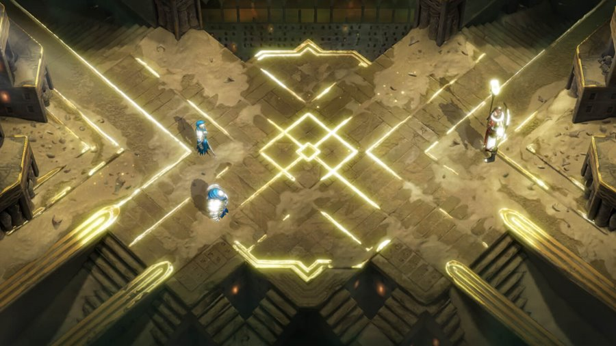
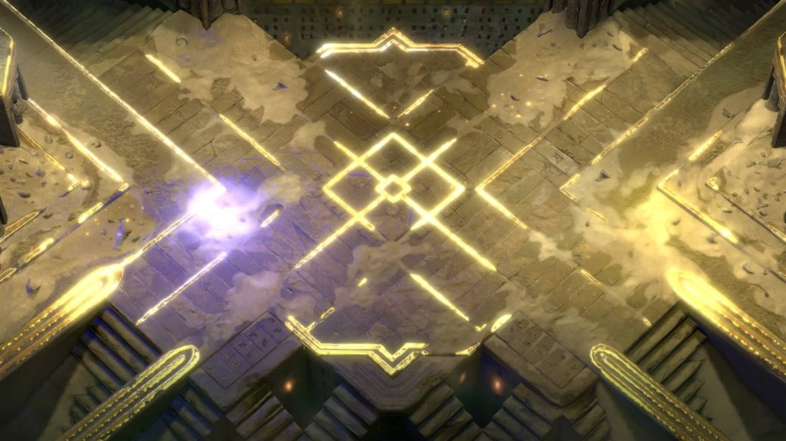
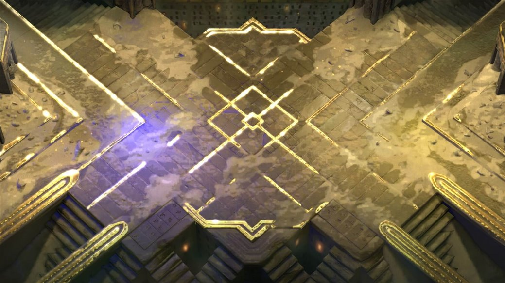
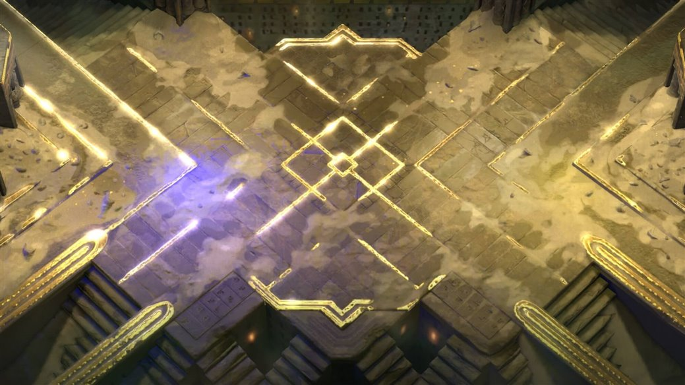
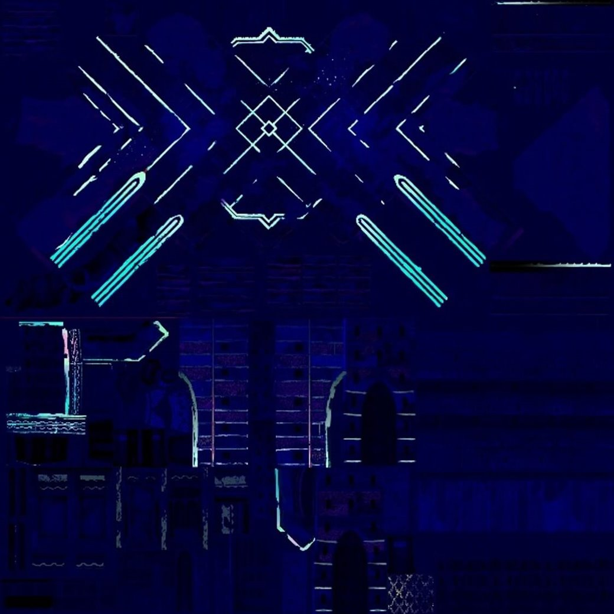
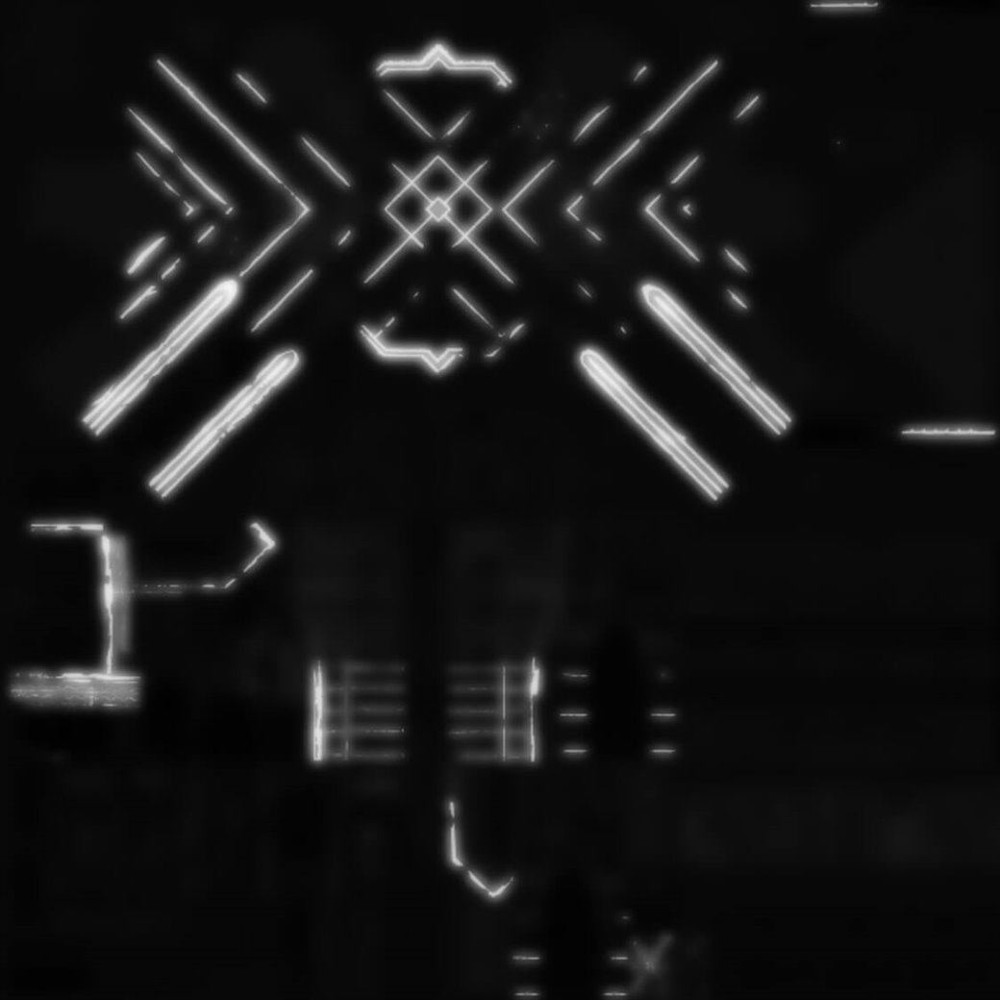
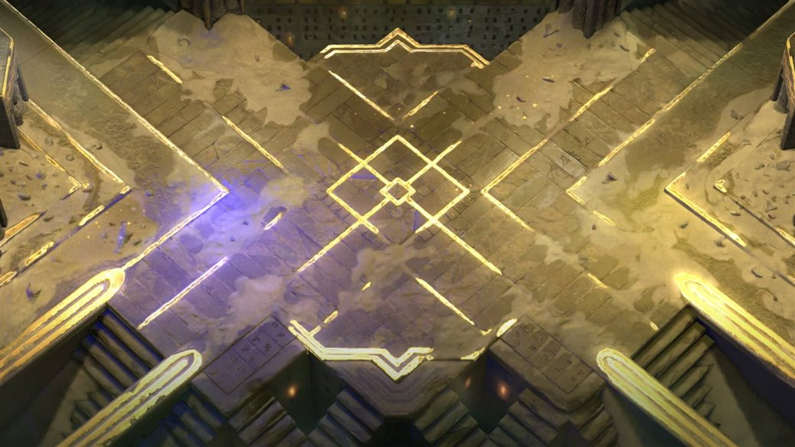
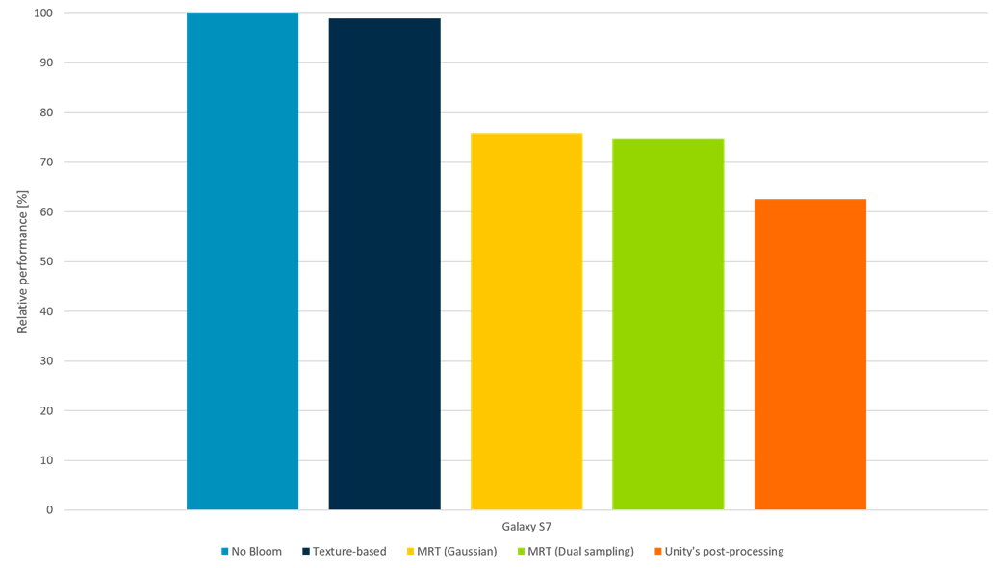
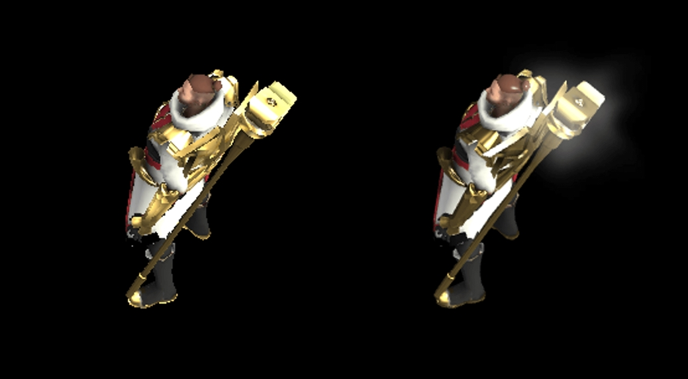

[译]Post-processing Effects on Mobile: Optimization and Alternatives

Overview
游戏质量之间的界限变得模糊，现在的手机的画面是前几年不能想象的。
如果手机要跟主机的画面比，开发者必须一致想一个问题：手机图形缺少什么来跟主机竞争？ARM团队最直接的答案就是理解GPU预算的差异。
移动GPU面临的最大挑战是设备外形尺寸，限制了面积和功耗。令人惊讶的是，这些小型GPU可以实现，但也就是说，在原始计算能力和内存带宽方面，和主机相比仍然有明显的差异。
这并不一定意味着移动平台的内容一定比主机平台差，但是对于需要深入研究优化游戏的大胆的开发者是一个重大的挑战。排除任何无关因素是关键。大多数主机游戏可以有不必要的drawcall，渲染被遮挡的东西，但是移动设备必须都处理好。
除了可以渲染的多边形数量以外，还有一个主机平台比移动平台亮眼的地方：通过后处理实现blingbling的视觉效果。重要的是后处理在移动平台不是完全禁止的，我们应该理解为什么后处理效果不适合移动平台的GPU，以及如何处理这些限制。
移动平台GPU，包括ARM Mali，通常使用tile-based渲染，意思是vs和fs在屏幕上是同时只渲染一个Tile。这对移动平台更低的内存带宽是一个很好的解决办法，我们可以把当前Tile需要的数据存储在内部的内存来减少对主内存的访问。
看看这种方法的效果，你就会知道移动平台适合前向渲染，而不适合延迟渲染。这是因为传统的延迟渲染需要把所有tile渲染一遍放入内存，在下一个pass时再取出来。修改后的延迟渲染也可以在移动平台上运行的跟前向渲染一样。它采用PLS（Pixel Local Storage），允许我们在单个Tile运行两个pass来进行延迟渲染，而不需要存储/加载DRAM的数据。
你可能会看到这是怎么回事：移动GPU并不喜欢在为了访问先前存储的数据而运行多个渲染过程。这就是后处理的做法，渲染一个场景然后对它应用效果。
我们能用延迟渲染这种trick（Pixel Local Storage）吗？有点可能，一步一步来：让我们把模糊效果作为一个反例。为了模糊一个像素，你需要获取相邻的像素，这也需要运行多个Tile，所以我们不能用Pixel Local Storage。好歹这也解释了为什么主机平台标准的后处理流程不适合移动平台。在与图形相关的任何事情中，都需要巧妙地优化后期处理效果，以便更好地适应硬件或（巧妙地）实现类似效果而不使用后处理。
Our case study: Bloom in Nordeus’ Spellsouls
通过一点理论分析，我们接下来看看处理后处理使用遇到的问题会发生什么。

Nordeus，一个塞尔维亚游戏工作室，你可能已经知道这个非常受欢迎的游戏; Top Eleven正在开发一款名为Spellsouls的新型1-vs-1 PvP战斗游戏：传奇决斗。 它拥有令人惊叹的视觉效果，并支持各种设备。
这是游戏的截图，包含非常细腻的角色和PBR着色器：

他们对大多数材质的外观是非常满意的，但是一些东西看起来过时了。地面上的黄金看起来不像真的黄金，角色的装甲需要更blingbling。这里缺少的是一个bloom后处理的效果，可以让屏幕的部分区域泛光。
看一下相同场景但是加了bloom。这是一个模拟图像，其中的效果被夸大了以清楚地区分它。
bloom最普遍的做法就是取出一张图比较亮的部分，模糊然后叠加在原始图中。
Unity自带的后处理的bllom对Speccsouls不合适，因为两个主要原因：
- 正如我们前面讨论的，标准的后处理在移动平台不能很好的工作
- 标准的bloom会应用在任何亮的区域，但是Nordeus只想用在金属上
使用Unity Bloom的效果：

他们通过优化选择对象的方式和bloom管线本身来解决这两个问题。
为了给指定物体应用bloom，他们用MRT（Multiple Render Target）把这些物体以超过1的结果渲染到另一张图。这样他们得到了一张纹理，可以用来当做自定义bloom管线的输入。

这种做法还能让他们不用HDR framebuffer就能实现类似HDR的效果。MRT这一步中他们使用了一个RGB24的framebuffer，他们使用一个缩放因子表示比1大的数。
这样做带宽的开销还是挺高，因为有一个RGB24的纹理需要存储到memory然后又要从memory加载。因此，他们改成使用一个R8的framebuffer存储亮度值，这样可以大大减少带宽。

在bloom最终效果合并之前的步骤有缩小、垂直模糊和水平模糊。用一次垂直模糊和一次水平模糊来实现高斯模糊能减少每个像素的采样次数。
我们跟Nordeus的合作在这里开始。他们的bloom需要3ms。这其实已经挺好了因为是在移动平台，但还是不够，因为他们想让游戏跑到60FPS，光这个bloom就占用了这么多。他们开始找我们寻求帮助。
查看他们已经做得优化，我们主要关注模糊这一步，因为它是这个管线中最昂贵的部分。高斯模糊很简单但不是最佳的，有一个能达到很好的模糊效果的技术同时也能降低采样次数。
我们选择使用Dual Filtering，你可以在这篇文章了解更多细节。它具有优化的缩小/放大Filter，可以以更低的成本获得更强的效果，如更高的高斯半径，（1080p性能提升14倍）。
然而当我们在Spellsouls使用这个技术后，性能并没有多大的提升；Nordeus已经通过首先缩小图片来优化高斯模糊了，所以使用Dual Filtering的提升很有限。我们的实现还是在相同消耗下实现了更平滑的bloom，如下面所示：
高斯模糊bloom：

Dual Filter的bloom：

这就是对后处理的优化。没有什么方法使后处理完全没有开销，所以我们如果真要省下3ms就必须寻找一些更粗暴的方式。
Bloom without post-processing
如果我们完全不用后处理捏？我们不用后处理能做到Bloom吗？如果我们愿意接受一些权衡，我们可以以最低的成本获得良好的结果。因为terrain大部分是静止的，我们为啥不试试bake我们的bloom呢？Spellsouls的PBR shader已经有一个glossiness map：

我们可以使用glossiness中的亮度数据来获取一个“bloom map”，就像上面使用MRT在运行时构建的R8纹理。这个纹理可以存储在glossiness map的alpha通道节省一个额外的纹理访问。

在顶点着色器中，我们计算了光反射方向和camera方向的alignment向量：
1 | // Vertex shader |
Texture-based bloom

不同做法的性能对比：

总而言之，成本大大降低，效果稍差 - 不到1毫秒。 美术们对这种权衡感到高兴，所以今天是个好日子！
或者是吗？
嗯，这种基于纹理的方法用在地形还可以，但角色的盔甲呢？ 我们可以尝试将texture-based bloom应用于角色，但结果看起来不像bloom。 它没有light bleeding，因为我们只能处理角色本身的像素。
在这种情况下，我们可以采用一种更为严格的近似：我们在相机和角色之间渲染一个平面，始终面向相机。
Plane-based bloom：

效果并不完美，但light bleeding，感觉有点像bloom了。 再次进行了一次重大的权衡 - 地形使用texture-based bloom，角色使用plane-based bloom，他们仍然占不到1毫秒。
下图中左侧是Texture-based bloom，右侧是plane-based bloom

这里要说的是，我们可以在不用后处理的情况下实现我们想要的效果的近似值。 它不是一个通用的解决方案，但它是使这种效果开销低的唯一方法。
General optimizations
我们还能做些什么吗？ 我们不应该只关注bloom，而应该顾全大局; 我们可以尝试降低bloom的开销，直到它几乎无关紧要，就像我们之前做的那样，或接受后期处理的成本并尝试优化其他部分。
最重要的是总渲染时间。 如果后处理效果需要3毫秒，我们需要从游戏的其余部分节省至少3毫秒。 游戏其余部分的渲染时间约为16毫秒（60 FPS）或33毫秒（30 FPS），因此可能更容易在那里节省几毫秒而不是试图进一步降低已经优化的部分。
在这种情况下最困难的部分是缩小我们的选择范围，因为优化游戏的其余部分是有很多可能性的。 您可以在optimizing for Mali developer guides找到这些技巧和提示。
使用DS-5 Streamline，我们发现游戏是GPU绑定的，特别是片段绑定的(意思就是GPU是瓶颈，片元计算是瓶颈)。 这仍然没有告诉我们关注哪里。 让我们看一下从游戏中截取的一帧并尝试弄清楚它。 根据片段着色，你能算出哪个是最重的部分吗？
这可能是令人惊讶的，但开销最大的是地形！ 这是因为地形覆盖了大部分屏幕，因此在渲染时间最长。 我们通过一次启用一个部件来构建游戏并测量帧时间来发现这个结果：我们无法通过查看着色器来计算出来。
既然我们知道我们需要关注terrain，让我们分解片元着色器的开销：
- Lighting - 6ms
- Reflections - 4.4ms
- Tangent-space normals - 1.2ms
因为terrain是静态物件，我们可以bake world-space normal maps，节省运行时的计算。
我们不想修改反射，因为其中具有清晰的反射和良好的视觉质量是游戏的亮点之一。这就使得光照成了下一个优化的目标。我们首先把光照渲染到一个低分辨率的lightmap上。
我们定义了512x512的“AddtiveLights” render texture，然后我们在Unity的OnPreCull使用replacement shader渲染lightmap。这个pass是在阴影之后渲染的，但是相互的顺序没那么重要。我们用“Terrain_AddtiveLight” 这个Render Type来标记需要渲染到lightmap上的物体。
PBR shader加入了“AddtiveLights”的定义。这个纹理在运行时采样来得到光照信息。使用低分辨率的lightmap节省了4.3ms，这使我们可以使用更多的动态光照，因为每个光源的成本比全分辨率低了很多。
不过，我们可以做得更多。 如果我们以较低的分辨率渲染整个地形会怎么样呢？
它不是缩小整个游戏的分辨率：角色和法术，这是游戏的主要视觉焦点，仍将以全分辨率渲染。 在OnPreCull（）中渲染Additive Light纹理之后，我们将地形渲染道一张720p的Render Texture。 我们使用layer来过滤要在那里渲染的对象。
在OnPreRender中，也就是main camera渲染之前，我们执行了一个低分辨率纹理到高分辨率屏幕buffer的blit。我们只拷贝了color attachment；我们不需要深度信息因为法术和其他单位都在地形前面。
理想情况下，将地形分辨率从1080p降低到720p意味着我们渲染的像素减少了约55％。 我们得到的结果相当接近：地形渲染时间从9.3毫秒下降到约5毫秒。
这些优化帮助我们节省了大约10毫秒，这可以轻松弥补Nordeus后处理的开销。 但是，通过使用我们基于纹理/基于平面的布隆方法以及这些优化，我们可以使游戏在高端设备上以60 FPS运行，并增加可以以30 FPS运行它的设备数量。
Conclusion
我们在与Nordeus的合作中学到了很多东西，我希望你能从这个博客中学到一些东西，并将大部分内容用于你自己的游戏。 您可能已经知道后处理效果并不适合移动设备，本博客文章的目的是通过一些可能的解决方法来解决原因。
通过在熟悉目标平台的情况下定制管道，仍然可以在移动设备中使用后处理。 但是，根据效果，如果没有完全后处理，您可能会获得相当不错的结果。 如果您正在使用bloom，请随意尝试我们的方法和Arm的免费调试和分析工具，它们可以帮助您为游戏的视觉效果增添趣味。
最后，永远不要忘记大局：你将要添加到游戏中的任何效果都将导致总帧时间。 这意味着您可以通过优化游戏的其余部分来释放一些预算。 您应该尝试真正利用这些移动最佳实践：即使您的游戏已经按目标帧速率运行，您仍然可以增加预算以获得一些很酷的视觉效果。